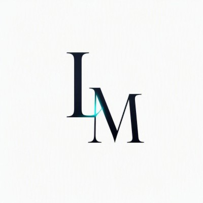

PELE • CUIDADO • CONFIANÇA
Beleza que começa com intenção.
Conhecer tratamentos
01
Hierarquia elegante + foco em confiança + CTA evidente.

LM Studio Falar sobre um projetoA LM Studio cria páginas web com direção visual, clareza e intenção — para transformar uma primeira impressão em confiança, interesse e contato.
Hoje, meu repertório está especialmente concentrado em estética e beleza — um mercado em que percepção, confiança e apresentação influenciam a decisão antes mesmo do primeiro atendimento.
01 / O PROBLEMA
Quando alguém entra no seu site, ela tenta responder três perguntas em poucos segundos:
Meu trabalho é transformar essas respostas em uma experiência visual que faça sentido para a sua marca — sem depender de um template genérico para parecer profissional.
02 / DIREÇÕES DE PROJETO
Estas composições mostram a direção de interface que a LM Studio desenvolve para o nicho de estética. Não são apresentados como cases de clientes ou resultados fabricados.
Explica o valor, reduz dúvida e conduz para a ação.
03 / O QUE EU DESENVOLVO
O escopo é definido a partir do que a página precisa fazer: apresentar, captar, lançar, explicar ou gerar contato.
Para campanhas, procedimentos, serviços específicos ou uma oferta que precisa de foco.
Para organizar a marca, construir confiança e deixar claro o que você faz.
Para ações sazonais, lançamentos, captação ou uma experiência mais editorial.
Estética e beleza são hoje o principal território visual do portfólio, mas a LM Studio também desenvolve páginas para outros negócios quando o projeto pede a mesma atenção à percepção e à conversão.
04 / PROCESSO
Entendo oferta, público, objeções e a ação que a página precisa gerar.
Defino hierarquia, linguagem visual e estrutura antes de virar código.
Desenvolvo a interface responsiva, com atenção a velocidade, legibilidade e interação.
Reviso detalhes, responsividade e pontos de atrito antes da publicação.
05 / POSICIONAMENTO
Quero que ele entenda por que escolher você.
06 / FAQ
Sem preço tabelado porque o escopo muda conforme a função, o tamanho e a complexidade da página.
Não. Estética e beleza são meu foco atual de portfólio porque esse mercado exige muito de apresentação, confiança e percepção. Projetos de outros segmentos também podem fazer sentido.
A proposta da LM Studio une direção de interface e desenvolvimento da página. O formato técnico é definido conforme o projeto.
Não. Materiais da marca ajudam, mas a estrutura da página e a organização da mensagem fazem parte do trabalho. Conteúdos específicos, fotos e informações do negócio são alinhados no briefing.
Você me conta o que vende, para quem vende e o que espera que a página gere. A partir disso, definimos o escopo certo antes de começar.
Vamos fazer essa primeira impressão trabalhar a seu favor.
Quero conversar sobre minha página